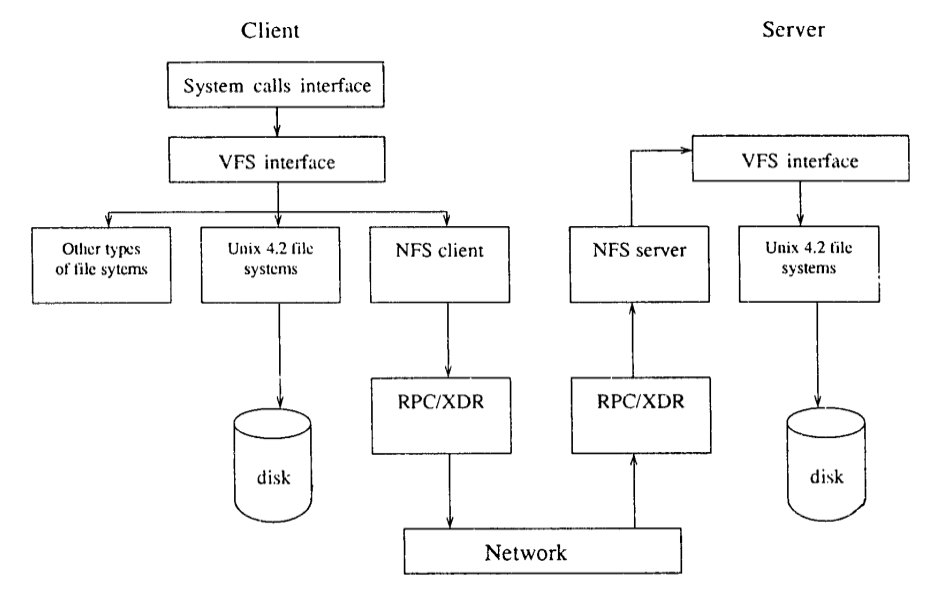
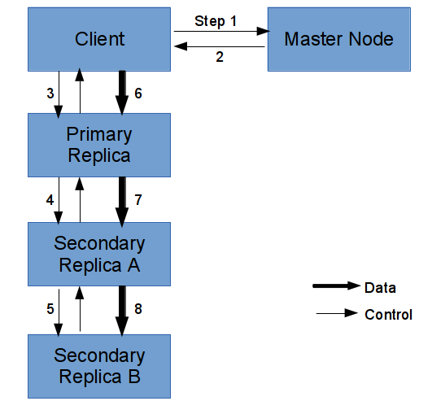
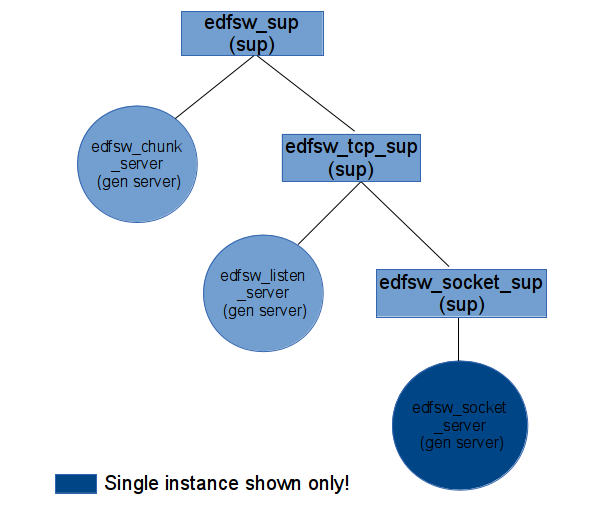
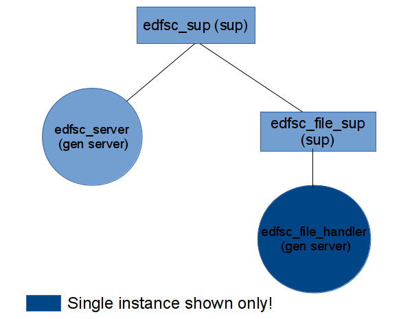

Final Year Project: Erlang Distributed File system (eDFS)
 download pdf
download pdf
 view source code
view source code
 view code documentation for master
view code documentation for master
 view code documentation for worker
view code documentation for worker
 view code documentation for client
view code documentation for client
view results
It is extremely difficult for single system to provide high availability, fast response, large data storage and low cost all at the same time. We need multiple systems running in parallel working closely together towards the same goal. We call such systems Distributed Systems. Permanent storages are key component to any computing systems and we, therefore, need Distributed File System (DFS) to store data. It satisfies the needs of applications that process large volumes of data such as search engines, data mining applications.
Erlang [1] is recently developed general purpose highly concurrent functional programming language. It was designed to support distributed, fault tolerant, scalable, non-stop applications. It has been used in production systems (e.g. AXD301 ATM switch) with an uptime percentage of 99.9999999% (nine nine's) [3, p. 170] [4]. It is being used by Facebook, Github, Riak, Amazon etc. to develop large distributed systems.
We have leveraged the distributed capabilities of Erlang and have developed yet another DFS namely Erlang Distributed File System (eDFS). It is highly concurrent, reliable, scalable and fault tolerant. In this report, we first develop small taxonomy of DFSs. We, then describe the architecture of eDFS and compare the design with the existing DFSs. We will also compare the different underlining techniques to choose over the other technique.
Distributed File System is an extension of file system which manages files and data on multiple storage devices and provides more performance and reliability using various modern techniques. Outside world only sees it as a single storage device and thus simplifying the interface to a great extent. It also provides location transparency and redundancy to improve data availability in case of failure or heavy load.
Initially DFSs were implemented as part of operating system of each of the connected computers. They either added a software subsystem to UNIX kernel as in Unix United [5, p. 342] or have developed distributed kernel from scratch like Locus [5, p. 345]. These DFSs have treated failures as exceptions and focused on sharing of resources. Network File System (NFS) protocol [5, p. 351] was developed in this sequence to perform remote file operations.
In recent years, there has been as explosion of interest in computing using clusters of commodity or shared resources. Recently developed the Hadoop Distributed File System [8] and the Google File System [7] are designed for use in these commodity computing clusters with a prototypical workload consisting of write once, high throughput, sequential I/O. These systems are cluster based and typically store the metadata separate from the actual data. They provide reliability by replication and consider component failures as norm rather than exceptions.
eDFS is developed with the same strategy using Erlang distributed capabilities. It provides network transparency, location transparency, server and client side caching for high performance, fault tolerance and scalability to some extent. It is highly concurrent and reliable. Security issues are not handled as of now, upcoming versions of eDFS may provide security as well.
In this report, we begin with developing taxonomy in section ![[*]](images/crossref.png) of various techniques and architectures used in DFSs. In section we look at some of the existing DFSs which are important to understand the architecture of eDFS. In section we outline some of the prominent features of Erlang. Sections describes the architecture of eDFS. The main focus has been scalability, efficiency and simplicity while developing the file system. At the end, we discuss the results and future work.
of various techniques and architectures used in DFSs. In section we look at some of the existing DFSs which are important to understand the architecture of eDFS. In section we outline some of the prominent features of Erlang. Sections describes the architecture of eDFS. The main focus has been scalability, efficiency and simplicity while developing the file system. At the end, we discuss the results and future work.
Taxonomy of Distributed File System
The different types of transparencies a DFS tries to provide, are as follows-
| Transparency |
Description |
|---|
| Access |
Hide the differences in the data representation and how the resources are accessed |
| Location |
From the file descriptor it is almost impossible to find out the actual location of the file |
| Migration |
Hide the movement of resources within the file system |
| Replication |
Hide the fact that multiple copies are present for a file inside the system |
| Network |
Allow to access remote file as if they are locally stored |
| Failure |
Hide the failure and recovery of connected components in the system |
| Persistence |
Hide whether the data is stored in memory or disk |
Following are the various architectures used by DFSs, not necessarily mutually exclusive-
| Architecture |
Description |
Examples |
|---|
| Client-Server |
Communication directly with the server having the file, no intermediate server |
Sun NFS , Unix United |
| Cluster Based |
Single master node and multiple worker nodes or storage sites |
GFS , HDFS , TidyFS |
| Symmetric |
All nodes understand disk structure and metadata, all nodes are alike |
Sun NFS |
| Asymmetric |
Only a few dedicated metadata managers |
Locus , Andrew |
| Parallel |
Data is striped, in parallel, across multiple storage |
Panasas |
| Object Based |
Provides objects storing all the information required to perform any operation with the file |
Panasas |
Processes can either be stateful or stateless-
| Stateless |
Fault tolerant, servers don't maintain states so it doesn't matter to client or server if other has crashed |
Sun NFS |
| Stateful |
More efficient but complex in nature, component failures has to be handled explicitly |
GFS |
Most of the DFSs use RPC over TCP as communication protocol. HDFS uses RPC over UDP at times to improve the performance of the system. Some other file systems like Lustre have used a more sophisticated approach to provide network independence. In eDFS, we have used a combination of TCP sockets and Erlang Message Passing for communication between various nodes.
Namespace structure is important to a distributed file system. It is an abstraction of real physical storage. Following approaches has been used by DFSs-
| Approach |
Description |
Example |
|---|
| Central Metada Server |
Single metadata server stores all the mappings from actual path of the file to its physical location on disk including the storage site location |
GFS |
| Distributed Metadata Approach |
Multiple synchronised metadata servers |
HDFS |
| Mount Protocol |
Client mounts the server in a local directory and treats it as part of local file system |
Sun NFS |
Mostly file systems provide locking mechanism and follow write-once-read-many access models. In such cases, there is some delay before other clients reading the file sees the newly written data. On the other hand, Google File System follow multiple-producer-single-consumer access model to support its search engine requirements. Some follow Unix semantics for file sharing (everybody sees the effect of write as soon as writing is complete) but it impacts efficiency a lot.
Caching has been extensively exploited to improve efficiency of DFS but handling cache is complex and requires server to be stateful. Following types of caches have been implemented by file systems-
| Method |
Description |
Example |
|---|
| Server Side Caching |
Metadata is cached in memory to provide fast access |
Sprite |
| Client Side Caching |
Data is fetched in blocks and cached by clients |
Locus |
It is very important to ensure the consistency of the data in the file system. Most of the DFSs use checksum to validate the data after sending it over the network. HDFS stores file's metadata (e.g. checksum per block) in a different file than the actual data on worker node to avoid corruption in both data and metadata at the same time. GFS doesn't even allow modifications in a file once written. Only appends are possible through lease mechanism so that consistency of the data is maintained.
There are two types of data to be replicated- metadata and actual data replication. Following expensive techniques are used for metadata replication considering the importance of it-
- backup metadata server like in HDFS
- Periodic Checkpoints, Snapshots and transaction logs
For data replication, following techniques are useful-
| Method |
Description |
Example |
|---|
| Synchronous Replication |
A pipeline is setup and data is mutated on all the replicas |
GFS |
| Asynchronous Replication |
Data is first mutated on one replica and client it notified. Rest replicas are updated later |
Locus |
| RAID |
Use various RAID technologies for replication |
RAID 0 in Lustre |
Two ways to treat and recover component failures-
| Method |
Description |
Example |
|---|
| Failures as exceptions |
System will isolate the failure node or recover the system from the last running normal state |
Sun NFS |
| Failures as norm |
They assume failures are possible and implement programs to handle them |
GFS , HDFS |
Scalability has been a major issue for the file systems. Following points are important in this regard-
- DFS relying on broadcasting is not scalable e.g. Sprite
- Central control systems for example having single metadata server can be scaled only to limited extent e.g. GFS
- The practical approximation to symmetric and autonomous configuration is clustering, where a system is partitioned into a collection of semi-autonomous clusters. Cross cluster references should be avoided in such a case e.g. Locus
- Light weight processes are important to scalable systems. In such cases, an I/O request only delays a single process (thread) not the entire service. I/O requests are frequent in DFS. Also sharing among the threads is easily facilitated.
Most DFS employs security with authentication, authorization and privacy. Some are only for specific purposes where clients can be trusted. No security is implemented in such systems.
History of DFS
Unix United [5, p. 342]
This is one of the earliest attempt to extend UNIX file system to a distributed file system without modifying the linux kernel. A software subsystem (application) named Newcastle Connection is added on top of kernel on each of the connected computers.
Unix United name structure is a hierarchy composed of component UNIX subtrees. Roots of each component unit (connected computer) are assigned names except its own root. Therefore, only relative path names are allowed. This leads to network transparency but not complete location transparency. The connection layer Newcastle, intercepts all system calls concerning files and filters out the remote access commands. Each system stores a partial skeleton of global naming structure related to only its neighbouring systems. To access a file farther than 1 system unit, remote traversals has to be continued. One client one process model is implemented to perform operations on remote files. RPC protocol is used for communication between component units.
It is the simplest possible distributed file system. The issue of autonomy of component system is well demonstrated but the stateful service scheme makes it less robust. It does not provides any reliability, no fault tolerance either.
Locus [5, p. 345]
Locus is a full scale true distributed operating system and implements distributed file system as one part of it. It uses the facility of light weight processes (LWP) to achieve multitasking. The most powerful feature is separation of logical view of the file system with the actual storage. All the high level operation like read and write only need to worry about the logical view. The distributed operating system takes care of the rest providing reliability, fault tolerance, network and location transparency.
A removable file system in Locus is called filegroup, a logical name structure. Each file group is mapped to multiple physical containers called packs storing replicas of the files in the filegroup. One copy is assigned primary tag and always contains the most recent version of the data. Current synchronization site (CSS) is responsible for updating the rest of the replicas. A mount table is maintained on each node to provide network transparency.
Caching is used for efficient read and write operations. While reading a file, Using Site (US) finds a potential Storage Site (SS) with the help of CSS and communicates directly to get the data. The whole page is fetched to US and stored in kernel buffer. Further read calls are serviced from kernel buffer. While writing, on the other hand, first the primary copy is updated and then CSS is informed to update the rest of the replicas. It used shadow page mechanism for implementing atomic commit. CSS is responsible to ensure fault tolerance. Locking facilities are provided in order to enforce exclusive-writer-multiple readers policy.
Though Locus is fault tolerant, reliable DFS but it is not meant for very large distributed environment. One CSS per file group, extensive message traffic and server load caused by the access synchronization and replication of logical mount table at all sites does not allow it to scale largely.
Sun Network File System (Sun NFS) [5, p. 351]
NFS provides file services in a heterogeneous environment of different machines, operating systems and network architectures. This is achieved through the use of RPC primitives built on top of External Data Representation (XDR) protocol. It is mostly divided into two parts- mount protocol and file access protocol. Mount protocol allows user to treat the remote file system locally whereas file access protocol enables reading, writing in a file, searching in a directory etc.
NFS has 3 layered architecture as shown in figure . The top layer provides a clean interface to users to perform operations on files. Middle layer is Virtual File System (VFS). It activates file system specific operations for local requests and NFS protocol procedures for handling remote requests. The bottom layer implements the NFS protocol. Every system has its own view of logical name structure. For I/O operations, each client communicates to the server directly. Pathname traversal is also performed client to server with no mediator. A directory lookup cache is maintained for efficient traversal.
Figure:
NFS Architecture

|
For security reasons, each server maintains an export list that specifies the local file systems it allows to export (get mount) along with the names of machines permitted to mount them. Cascading mounts does not exhibit transitive property and the security of the system is still preserved. The list is also used to notify the servers if any of the connecting server goes down. Only administrator/s has rights to change the export list.
The prominent feature of NFS servers is that servers are stateless. Caching is used for efficient file operations but it is handled such that stateless property is preserved. The changes, therefore, may take some time to be visible to others. Overall it provides network transparency, fault tolerance to some extent but fail to provide location transparency, reliability.
Sprite [5, p. 357]
Sprite, similar to Locus developed from scratch, is distributed operating system. It is complete location and network transparent. Every domain (the component unit) maintains a prefix table containing the path of the topmost directory of a domain as the key. Longest prefix search gives the location of the file. If the file is not found at the location, the broadcast protocol is invoked and the table is updated. In this protocol, whoever has the file replies to the broadcast message.
Sprite uses caches extensively to provide efficient reads. Delayed write, version numbers and stateful servers provide efficient writes. It follows one write multiple read model but cache is disabled when multiple clients are performing reads and write. This leads to substantial degradation in performance. Replication can be arranged so that servers storing a replicated domain give different prefix to different clients for the same domain.
Sprite has powerful prefix table management technique but it is not so much fault tolerant and scalable because of the extensive use of broadcast protocol and caching techniques.
Andrew [5, p. 360]
Andrew file system is known for its scalability features. It is implemented by modifying linux kernel. It follows cluster based architecture. The master node is called Vice whereas the worker node runs the process named Venus. Vice presents with a location and network transparent view of the file system to clients. The DFS consists of many clusters, each cluster containing one master node and multiple worker nodes (workstations). For performance reasons, inter cluster references are avoided.
Clients are presented with a partitioned space of file names- local and shared name space. workstations are required to have local disks where they store their local name space, whereas servers collectively are responsible for the management and storage of the shared name space in Vice.
Andrew file system exploits extensive use of disk caching to increase the performance. It caches contents of directories and symbolic links for pathname translations. For missing paths, Venus does a traversal and caches the information. Entire File is cached while reading and writing. Kernel can directly read data from cache without any intervention of Venus. An event driven callback mechanism is used to invalidate cache when file is modified by other clients.
Andrew was a successful attempt towards scalable DFS. It provided network and location transparency and fault tolerance were treated as errors.
Panasas Active Scale Storage Cluster [6]
It is a general purpose storage system developed by combining a DFS with smart hardware based on Object based Storage Devices (OSD). It uses RAID and in memory cache to provide efficient access. Decoupling the data path (read and write) from the control path (metadata) allows direct access to files for clients.
The primary component is the object and object devices. An object is an entity which contains the data and has enough information to allow the data to be autonomous and self managing. The object based storage devices (OSDs) are more intelligent evolution of disk drives that can layout, manage and server objects. A cluster contains metadata server (MDS), OSDs and client module providing POSIX compliant interface to the user.
MDS is responsible for metadata management. It constructs, manages and disseminates a map describing the layout of each file , allowing clients to access objects directly. A map enumerates the OSDs over which the file is striped. It uses secure, cryptographic token called capability for secure access to the data. It is also responsible for reconstruction of lost component objects, parity scrubbing, directory management and callback mechanism for validating cache.
OSDs, on the other hand, are responsible for data storage and concurrent access. While writing to disk, OSD file system (OSDFS) attempts to write data in contiguously blocks on disk. It breaks up the write into multiple seeks otherwise, making sure to place per object data on physically contiguous block. Read ahead mechanism is used with in memory cache to enable fast read access. Objects store a rich set of information for the purpose of read ahead algorithm.
The OSD also reduces the metadata management burden on the MDS by maintaining one component object per OSD. Successive object stripe units are added to initial component object for every stripe on every drive to avoid the need for client to go to MDS again. Overall this is a good example of object based secure, scalable distributed file system.
Google File System (GFS) [7]
Google file system was developed to meet the rapidly growing demands of Google's data processing needs. It is scalable, highly fault tolerant, reliable system and provides complete network and location transparency. The design is driven by the following facts-
- Component failures are very common in large cluster, hence treated as norms rather than exceptions
- Files are huge by traditional standards. Block size is, therefore, kept as 64MB
- Most files are mutated by appending new data rather than overwriting existing data. GFS is optimized for sequential access and append writes compared to random access. It provides multiple append operation by multiple clients at a time.
A GFS cluster consists of single master node and multiple chunk servers. The master maintains all the system metadata including namespace, access control information, mapping from files to chunk and current location of chunks. It controls chunk lease management, garbage collection of orphaned chunks and chunk migration between chunk servers. The master periodically communicates with each chunk server in Heartbeat messages to give instructions and collect its state.
Neither the client nor the ChunkServer caches the file data. Client caches offer little benefit because most applications streams through huge files. Not having them simplifies the client. ChunSservers need not cache file data because chunks are stored as local files and so Linux's buffer cache already keeps frequently accessed data in memory.
Lease mechanism is used to minimize the master's involvement in all operations. A lease is assigned to any ChunkServer for a particular chunk and is responsible to update all the changes in the chunk to the rest of the replicas. A lease times out unless extensions are granted through HearBeat messages by master node. While writing, a pipeline is first setup and data is pushed to all replicas by client. Once all the replicas have acknowledged receiving the data, a write request from the client is issued. The primary having the lease, assigns consecutive serial numbers to all the mutations it receives possibly from multiple clients. After applying the mutation to itself, the primary forwards the write request to rest of the replicas. Master node offers locking mechanism if demanded explicitly. If the mutation is not successful at any replica, it is left in inconsistent state and later on garbage collected by the master. Stale replicas are detected by keeping version numbers. It stores checksum along with data per each 64 KB blocks to ensure data integrity.
Hadoop Distributed File System (HDFS) [8]
Hadoop, mainly developed by yahoo, is a distributed parallel and fault tolerant file system. It provides framework for analysis and transformation of very large data clusters as well. Hadoop has the capability to partition data among thousands of clusters and perform computation in parallel. It follows cluster based architecture just like Google File System.
The HDFS namespace is hierarchy of files and directories. Everything is stored on the NameNode (metadata server) with attributes like permission, modification and access times including the locations of replicas of each block of the file. Everything is kept in RAM for fast servicing the client. Each block replica on a DataNode is represented by two files in the localhost's native file system. The first file contains the data itself and the second file is block's metadata including checksums. DataNode performs a handshake while startup and informs the NameNode about its presence. It sends the block report containing details of all the blocks maintained by it during handshake. Heartbeats are periodically sent to NameNode providing information about the capacity of the DataNode. These details are used while making allocation and load balancing decisions by the NameNode. It replies to the heartbeats in case it wants the DataNode to perform any specific operation.
Checkpoints are periodically created and maintained by keeping a journal of namespace to protect the file system metadata. DataNode other than storing data, can behave as CheckpointNode or BackupNode. CheckpointNode is responsible for combining existing checkpoints and journals. BackupNode stores all the metadata same as NameNode except block locations and is capable to creating new checkpoints.
HDFS implements single writer multiple reader model. Lease mechanism is used to avoid multiple clients to write at the same time. Lease is renewed through HeartBeats. Servers are stateful and uses buffer of size 64KB while writing. A pipeline is setup from client to the DataNodes. TCP like mechanism is implemented to achieve reliable writes. It takes some time before the data is visible to other clients to read. hflush operation is provided if data is required to be made visible instantly. Checksums are stored to ensure the integrity of the data on the local disk.
HDFS has a balancer to balance the data across the Data Nodes. NameNode is responsible for replication management for blocks on the DataNodes. A garbage collector is also present on DataNode in order to verify checksums and making sure the correct data is present. Any corruption is informed to the NameNode and recover methods are executed. Hadoop is highly scalable, reliable, efficient and fault tolerant distributed file system. It also provides complete network and location transparency.
TidyFS [9]
TidyFS, developed at Microsoft Research Center, is a simple and small distributed file system providing the abstraction necessary for data parallel computation. The prototypical workload is assumed to be high throughput, write once, sequential I/O. Cluster based architecture is implemented. The files are divided in the sequence of streams (blocks) and stored on the data node. The mapping of streams to sequence of partitions is stored on the metadata server. The metadata server is implemented as state machine and replicated for scalability and fault tolerant. The system provides a Graphical User Interface which enables users to view the state of the file system. A small service installed at each cluster machine is responsible for replication, validation and garbage collection. Clients read and write data directly to get the best possible I/O performance.
TidyFS has 2 interesting concepts. One is the implementation of servers as state machine and other is lazy replication to provide fault tolerance. Every storage machine can be in one of the four state: ReadWrite, the common state, ReadOnly, Distress or Unavailable. Machines transition among states as the result of an administrator's command. During the transition appropriate actions are executed. If a computer transitions from ReadWrite to ReadOnly, its pending replicas are reassigned to other computers that are in the ReadWrite state. If a computer transitions to the Distress state, then all parts, including any which are pending, are reassigned to other computers that are in the ReadWrite state. The Unavailable state is similar
to the Distress state, however in the Distress state, parts may be read from the distressed computer while creating additional replicas, while in the Unavailable state they cannot. The Distress state is used for a computer that is going to be removed from the system, e.g. for planned re-imaging, or for a computer whose disk is showing signs of imminent failure. The Unavailable state signifies that TidyFS should not use the computer at all.
Green HDFS [10]
The energy conservation of the extremely large scale, commodity data centers has become a priority problem, especially when the whole world is trying to go green. In 2010, a variant of HDFS
called GreenHDFS is proposed, which focuses on energy consuming issue in DFS.
In GreenHDFS, the data node is categorized into two zones, the cold zone and the hot zone. Hot zone consists of files that are being accessed currently or newly created. Performance is the greatest importance here so the energy savings are traded-off for high performance. The cold zone consists of files with low accesses. Files in cold zone are moved from hot zone by File Migration policy. For optimal energy savings, the servers in cold zone are in a sleeping mode by default. Each file in GreenHDFS is associated with temperature. A file is in hot zone when it’s created, but its temperature decreases if it’s not accessed frequently. When its temperature is lower than a threshold, it’s moved to the cold zone. Similarly, a file in cold zone is moved to hot zone if it’s accessed frequently.
GreenHDFS has a straight-forward goal and a simple design to achieve it. It is capable of achieving 24% savings in energy costs. However, moving files between servers and putting servers into sleep mode will definitely do harm to the overall performance.
Erlang
Erlang is pure functional, concurrency oriented, distributive, fault tolerant programming language. It runs on BEAM virtual machine, has its own scheduler, garbage collector and completely based on no shared memory but asynchronous message passing. Creating a process and destroying it is as quick as allocating an object in object oriented language. It believes in "Let it Crash" model and recover from normal state back again. It provides the concept of linking processes so that other process is informed when the linked process crashes. It has built in support for distributed operations. OTP are libraries and design principles in Erlang to provide middle-ware to develop large scale systems. It makes creating a distributed system as easy as a single server system.
Erlang Distributed File System (eDFS)
It is cluster based, complete location and network transparent, fault tolerant, reliable and based on light weight processes provided by Erlang. The workload is assumed to be general purpose but file system is optimized for high throughput, sequential I/O. Component failures are considered as norm rather than exceptions.
A cluster of eDFS contains a master node, many worker nodes and one or more than one client servers as shown in figure . Client communicate with client server in order to perform operations on file system. Client can be a browser or any other application which can communicate over tcp/ip connection. Client server can directly communicate to master node or any worker node. Multiple clients can perform operations on file system at the same time using same client server. Multiple client servers can be deployed for load balancing.
All the communication between client and any other node (master or worker) uses standard Bert protocol [2] unless it is simply message passing. Each time a client wants to perform operation on file system, it connects to client server. The client server in turn connects to master node or worker node depending upon the type of request. The client and each worker node creates separate processes corresponding to the operations performed on a single file. Every process has an associated time-out giving fault tolerance to the system.
Master node takes care of handling metadata. It is stored in mnesia in ets tables only. Each file, when created, is divided into chunks of approximately equal size. Every chunk is assigned a unique id and stored on multiple worker nodes based on the replication factor of the file. Replication factor is 3 by default but can be controlled by the client.
A chunk is assigned replicas such that all the nodes have approximately equal amount of data stored. Whenever a file is allocated a chunk, it decreases the node capacity. Worker node keeps informing the actual storage periodically and the capacity is corrected.
Metadata server constantly monitors all the nodes and the worker application running on the worker nodes. If any of the server goes down, it deletes all the available replicas from metadata on that server. At the same time it verifies that all the chunks have enough number of replicas. If not, it creates more replicas. When the node comes back, it informs all the available chunks on that node to metadata server.
As it is evident that master node plays very important role in a cluster. We will replicate and divide the work into multiple master nodes in future using mnesia distributive capabilities.
Chunk id is a unique randomly generated string. The chunk is stored with the same name on every worker node assigned to it. The name can only contain letters a-z, A-Z, 0-9, ".", "_" (64 letters). It is assumed that name is calculated with less than a million per sec frequency. Timestamp from operating system is converted into an equivalent representation of a random string and used as the name of a chunk. It is represented using 8 letters ( 64 bits). It is possible to generate such ids upto year of 2170 which is approximately 200 years later than the time since when cpu counts the number of seconds (1970).
Worker node maintains the actual data of the file as instructed by the metadata server. It maintains a list of chunks in memory as well as on disk in mnesia database to fast access the data. It implements a finite state machine with 4 state similar to TidyFS . It informs the metadata server for any change in the state. Appropriate actions are then executed when the state is changed.
At startup, it performs handshake with master node. It informs about its presence and sends the available capacity and used capacity. All the processes are started only after the handshake. It provides TCP servers for clients to directly communicate in order to perform operations on any chunk. A separate process is created to handle each client.
Each worker node periodically scans through a list of chunks available on it and verifies the checksum of the data stored in mnesia tables. It deletes the chunks which does not have any record in the chunk table and sends an updated list to metadata server. The metadata server makes sure that the information is synchronized.
Client server provides UNIX like semantics to perform file operations. It assigns a file handler to perform operations on each file. Whenever a request comes to the client, it checks whether there is an existing file handler for the given file. If no such handler is present, it creates a new file handler process. If no operation is performed by the client on a file for fixed duration, the process exits normally.
Client server sends a request to create the file with a complete path name of the file and replication factor if different than 3, to the master node. Master node creates the path if doesn't exist and makes an entry in the mnesia table. If the file is successfully created, ok is returned.
Client server sends an append request to master node with the name of the file. Master node replies with chunk id, the maximum amount of data allowed to be written on that chunk, location of all the replicas including the primary replica. It also returns the ip and the port of worker nodes corresponding to all the replicas. A TCP connection is set up with the primary worker node based on the provided information. The primary worker node, in turn, sets up another TCP connection with the node having the first replica and pass the list of rest of the replicas to it. In such a way whole pipeline is setup recursively and ready to perform append on the chunk as shown in figure
Figure:
Append Operation pipeline

|
The client server caches the data and sends it over the network in fixed size. The primary performs the append and if the append is successful the data is passed ahead in the pipeline. If the pipeline is broken at any point of time while writing, such replicas are marked as invalid and operation is carried out on rest of the replicas further. If it fails on primary, the operation is aborted.
If amount of data written exceeds the max amount of data allowed to be written on that chunk, client server requests a new chunk from the metadata server and the same process is repeated. At the end when file is closed, rest of the data is written and all the TCP sockets are closed. If no operation is carried out for timeout amount of time, the TCP sockets are automatically closed.
There is one top supervisor process in master application. Rightnow, it only supervises one process namely edfsm metadata server. This process maintains the metadata and performs operations on it. It also maintains the list of worker nodes with their storage capacity in mnesia as well as in memory. This information is used while choosing a replica for a chunk.
Apart from the top supervisor, following processes are added in the worker application-
- chunk server- handles the state of the worker node. 4 states are possible- READONLY, READWRITE, DISTRESS, UNAVAILABLE. The default and normal state is READWRITE. while startup, it performs a handshake with the master node and informs the storage capacity of the node.
- tcp supervisor- it supervises all the processes required to provide all the TCP communications happen e.g. TCP listen servers, socket servers.
- listen server- listens on a specified port. It creates a process for each request coming from the client under the supervision of socket supervisor.
- socket server- performs all the chunk operations. It sets up TCP connection with other worker nodes and forwards the requests.
Figure:
Worker Application OTP layout

|
Following processes are running on client server-
- edfsc server- receives all the requests from client and passes them to master node or the worker node depending upon the type of request.
- file handler- sets up TCP connection with the worker node and forwards all the file specific operations to it. It can also communicate to metadata server over message passing to get the new chunk id if required.
Figure:
Client Application OTP layout

|
Only create and append operations are available currently in the file system. Following is the expected work to be done in the stage 2 of this project-
- Explicit error handling when a node crashes
- Metadata is to be stored on disk on worker nodes
- Read and concurrent append operations
- Write operation on any file and locking mechanism
- Namespace handling, no directory structure is provided as of now
- Replication of metadata server
- Garbage collection process
- Checkpoint, snapshots or logs if required
- Map reduce framework
- 1
-
http://www.erlang.org/
- 2
-
http://bert-rpc.org/
- 3
-
JOE ARMSTRONG,
"Making Reliable Distributed Systems in the Presence of Software Errors",
A Dissertation submitted to the Royal Institute of Technology Stockholm
Sweden, December 2003.
- 4
-
JOE ARMSTRONG,
"What's All the Fuss About Erlang",
http://pragprog.com/articles/erlang,
2007.
- 5
-
ELIEZER LEVY, ABRAHAM SILBERSCHATZ,
"Distributed File Systems: Concepts and Examples",
ACM Computing Surveys, Vol. 22, No. 4,
December 1990.
- 6
-
NAGLE D., SERENYI D., MATTHEWS A.,
"The Panasas ActiveScale Storage Cluster: Delivering Scalable High Bandwidth Storage",
Proceedings of the 2004 ACM/IEEE conference on Supercomputing, pp. 53-,
2004.
- 7
-
SANJAY GHEMAWAT, HOWARD GOBIOFF AND SHUN-TAK LEUNG,
"The Google file system",
In SOSP '03: Proceedings of the nineteenth ACM symposium on Operating systems principles
New York, NY, USA, 2003
- 8
-
KONSTANTIN SHVACHKO, HAIRONG KUNAG, SANJAY RADIA AND ROBERT CHANSLER,
"The Hadoop Distributed File System"
Sunnyvale, California USA
- 9
-
DENNIS FETTERLY, MAYA HARIDASAN, MICHAEL ISARD AND SWAMINATHAN SUNDARARAMAN,
"TidyFS: A Simple and Small Distributed File System".
Microsoft Research Technical Report,
MSR-TR-20110-24
- 10
-
YUDUO ZHOU,
"Large Scale Distributed File System Survey",
Indiana University Bloomington
- 11
-
MAURYA M., OZA C., SHAH K.
"A Review of Distributed File Systems"
MPSTME, SVKM's NMISMS University
Vile Parle West, Mumbai-56
- 12
-
SATYANARAYANAN, M.,
"A Survey of Distributed File Systems",
Technical Report CMU-CS-89- 116, Department of Computer Science, Camegie Mellon University,
1989.
- 13
-
TRAN DOAN THANH, SUBAJI MOHAN, EUNMI CHOI, SANGBUM KIM, PILSUNG KIL
"A Taxonomy and Survey of Distributed File System"
School of Business IT, Kookmin University
Seoul, Korea, 2008
- 14
-
DEAN JEFFREY, GHEMAWAT SANJAY
"MapReduce: simplified data processing on large clusters"
Communications of the ACM
New York, NY, USA, January 2008
- 15
-
LOGAN MARTIN, MERRITT ERIC AND CARLSSON RICHARD
"Erlang and OTP in Action",
2010
Aman Mangal
2013-11-22